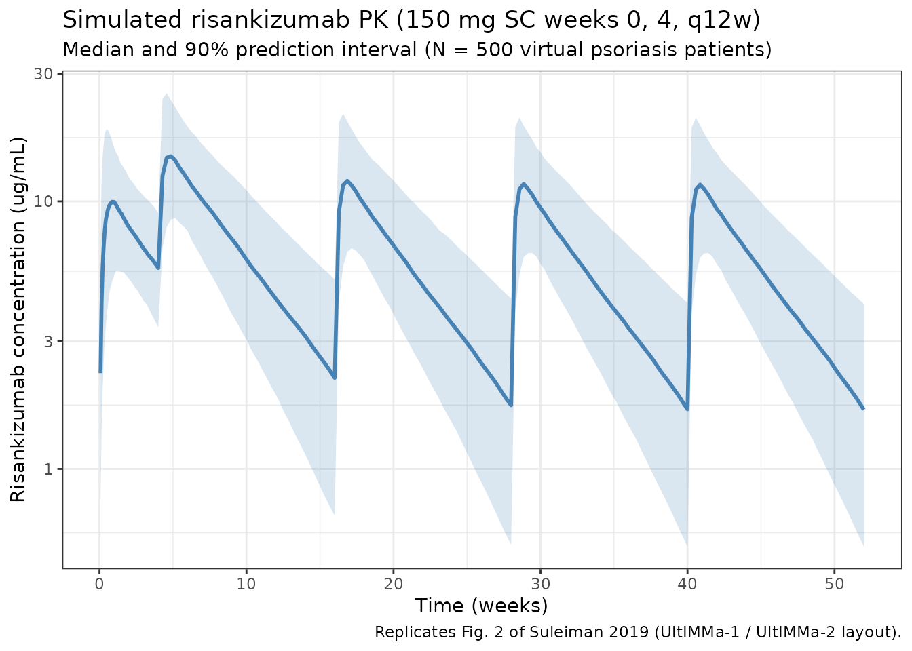
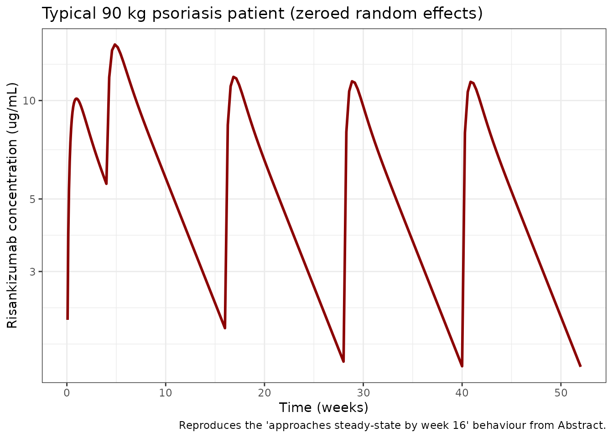

Suleiman_2019_risankizumab
Source:vignettes/articles/Suleiman_2019_risankizumab.Rmd
Suleiman_2019_risankizumab.Rmd
library(nlmixr2lib)
library(rxode2)
#> rxode2 5.0.2 using 2 threads (see ?getRxThreads)
#> no cache: create with `rxCreateCache()`
library(dplyr)
#>
#> Attaching package: 'dplyr'
#> The following objects are masked from 'package:stats':
#>
#> filter, lag
#> The following objects are masked from 'package:base':
#>
#> intersect, setdiff, setequal, union
library(tidyr)
library(ggplot2)
library(PKNCA)
#>
#> Attaching package: 'PKNCA'
#> The following object is masked from 'package:stats':
#>
#> filterRisankizumab population PK in healthy volunteers and plaque psoriasis
Simulate risankizumab concentration-time profiles using the final population PK model of Suleiman et al. (2019) from the integrated phase I-III clinical-trial programme in healthy volunteers and patients with moderate-to-severe plaque psoriasis. The source paper pooled 13,123 plasma concentrations from 1899 subjects (67 healthy volunteers and 1832 psoriasis patients) across seven studies.
The model is a two-compartment structure with first-order
subcutaneous absorption and linear elimination (NONMEM
ADVAN4 TRANS4). Typical parameters for a 70 kg reference
subject (median albumin, creatinine, and high-sensitivity C-reactive
protein [hs-CRP], ADA titer < 128, phase III drug supply) are CL =
0.243 L/day, Vc = 4.86 L, Vp = 4.25 L, ka = 0.229 /day, Q = 0.656 L/day,
and F = 0.890. The final covariate set is body weight on CL, Vc, and Vp;
baseline serum albumin, serum creatinine, and hs-CRP on CL; and a
time-varying ADA titer threshold effect on CL (+43% once titer ≥
128).
- Citation: Suleiman AA, Khatri A, Minocha M, Othman AA. Population Pharmacokinetics of Risankizumab in Healthy Volunteers and Subjects with Moderate to Severe Plaque Psoriasis: Integrated Analyses of Phase I-III Clinical Trials. Clin Pharmacokinet. 2019;58(10):1309-1321. doi:10.1007/s40262-019-00759-z
- Article: https://doi.org/10.1007/s40262-019-00759-z
Source trace
Per-parameter origins are recorded as in-file comments in the model file; the table below collects them in one place.
| Equation / parameter | Value | Source location |
|---|---|---|
| Two-compartment ODE structure (ka → central ↔︎ peripheral1, linear CL) | n/a | Sect. 3.2 and Eq. 6 (NONMEM ADVAN4 TRANS4) |
| CL (typical, 70 kg ref) | 0.243 L/day | Table 3 |
| Vc (typical, 70 kg ref) | 4.86 L | Table 3 |
| ka (typical) | 0.229 /day | Table 3 |
| Q (typical) | 0.656 L/day | Table 3 |
| Vp (typical, 70 kg ref) | 4.25 L | Table 3 |
| F, logit parameterisation, phase III drug supply | logit = 2.09 → F = 0.890 | Table 3 footnote d; Eq. 2 |
| F, phase I-II drug supply (not default) | logit = 0.896 → F = 0.710 | Table 3 footnote c |
| WT on CL | (WT/70)^0.933 | Table 3; Sect. 2.3 (70 kg reference explicitly stated) |
| WT on Vc | (WT/70)^1.17 | Table 3 |
| WT on Vp | (WT/70)^0.377 | Table 3 |
| ALB on CL | (ALB/44)^-0.715 | Table 3; ref = all-subject median, Table 2 |
| CREAT on CL | (CREAT/76)^-0.253 | Table 3; ref = all-subject median, Table 2 |
| CRP (hs-CRP) on CL | (CRP/2.8)^0.044 | Table 3; ref = all-subject median, Table 2 |
| ADA threshold effect on CL | 1 + 0.428 × (ADA_TITER ≥ 128) | Eq. 8 and Sect. 3.2 (Titer_threshold = 128) |
| IIV CL | 24% CV → ω² = log(1+0.24²) = 0.0560 | Table 3 (footnote e conversion) |
| IIV Vc | 34% CV → ω² = log(1+0.34²) = 0.1094 | Table 3 |
| IIV ka | 63% CV → ω² = log(1+0.63²) = 0.3342 | Table 3 |
| IIV–IIV correlation CL:Vc | 39% → cov = 0.03053 | Table 3 |
| IIV F (additive on logit) | variance 0.492 | Table 3 footnote f |
| Residual error | proportional, 19% CV (σ² = 0.036) | Table 3 |
| Dosing regimen (clinical) | 150 mg SC weeks 0, 4, then q12w | Sect. 2.3.1 and Fig. 2 caption |
Covariate column naming
| Source column | Canonical column used here |
|---|---|
WT (kg) |
WT (kg; per covariate-columns.md) |
ALB (g/L) |
ALB (g/L) |
CREAT (umol/L) |
CREAT (umol/L; canonical) |
hs-CRP (mg/L) |
CRP (mg/L; canonical general-scope; hs-CRP assay
documented in covariateData[[CRP]]) |
ADA titer |
ADA_TITER (reciprocal-dilution; 0 = negative) |
Virtual population
Phase III psoriasis trial-like covariate distributions. Suleiman 2019 does not publish individual-level data, so the distributions below approximate the “All subjects” demographics reported in Table 2 (median body weight 87 kg, median age 47 years, 29% female, median baseline albumin 44 g/L, median baseline serum creatinine 76 umol/L, median baseline hs-CRP 2.8 mg/L).
set.seed(2019)
n_subj <- 500
pop <- tibble(
ID = seq_len(n_subj),
WT = pmin(pmax(rlnorm(n_subj, log(87), 0.23), 42), 200), # kg
ALB = pmin(pmax(rnorm(n_subj, 44, 3.0), 34), 58), # g/L
CREAT = pmin(pmax(rnorm(n_subj, 76, 16), 35), 200), # umol/L
CRP = rlnorm(n_subj, log(2.8), 1.0), # mg/L, hs-CRP; skewed right
ADA_TITER = 0 # ~98.5% of phase III subjects are < 128
)Dosing dataset
Phase III clinical regimen: 150 mg SC at weeks 0 and 4, then every 12 weeks (q12w) thereafter. Simulate through week 52 to match the study-design window of UltIMMa-1 / UltIMMa-2 in Fig. 2 of the paper.
dose_weeks <- c(0, 4, 16, 28, 40)
dose_times <- dose_weeks * 7
obs_times <- sort(unique(c(
seq(0, 28, by = 0.5),
seq(28, 52 * 7, by = 2)
)))
d_dose <- pop %>%
crossing(TIME = dose_times) %>%
mutate(
AMT = 150, # mg SC
EVID = 1,
CMT = 1, # depot
DV = NA_real_
)
d_obs <- pop %>%
crossing(TIME = obs_times) %>%
mutate(AMT = NA_real_, EVID = 0, CMT = 2, DV = NA_real_)
d_sim <- bind_rows(d_dose, d_obs) %>%
arrange(ID, TIME, desc(EVID)) %>%
as.data.frame()Simulate
mod <- readModelDb("Suleiman_2019_risankizumab")
sim <- rxSolve(mod, d_sim, returnType = "data.frame")
#> ℹ parameter labels from comments will be replaced by 'label()'Concentration-time profile (replicates Fig. 2, Suleiman 2019)
The median and 90% prediction interval of the simulated concentration-time profile for the 150 mg SC q12w regimen through week 52. Replicates the VPC layout of Fig. 2 (UltIMMa-1 and UltIMMa-2 combined, phase III clinical regimen).
sim_summary <- sim %>%
filter(time > 0) %>%
group_by(time) %>%
summarise(
median = median(Cc, na.rm = TRUE),
lo = quantile(Cc, 0.05, na.rm = TRUE),
hi = quantile(Cc, 0.95, na.rm = TRUE),
.groups = "drop"
)
ggplot(sim_summary, aes(x = time / 7)) +
geom_ribbon(aes(ymin = lo, ymax = hi), alpha = 0.2, fill = "steelblue") +
geom_line(aes(y = median), colour = "steelblue", linewidth = 1) +
scale_y_log10() +
labs(
x = "Time (weeks)",
y = "Risankizumab concentration (ug/mL)",
title = "Simulated risankizumab PK (150 mg SC weeks 0, 4, q12w)",
subtitle = "Median and 90% prediction interval (N = 500 virtual psoriasis patients)",
caption = "Replicates Fig. 2 of Suleiman 2019 (UltIMMa-1 / UltIMMa-2 layout)."
) +
theme_bw()
Per-dosing-interval exposures
Compute Cmax and Ctrough over the first three maintenance dosing intervals (weeks 4-16, 16-28, 28-40). The paper reports that steady-state plasma exposures are approached by week 16 of dosing (Abstract and Sect. 3.3), so intervals starting at week 16 onward reflect the steady-state.
intervals <- tribble(
~label, ~start_wk, ~end_wk,
"2 (4-16)", 4, 16,
"3 (16-28)", 16, 28,
"4 (28-40)", 28, 40
)
ivl_summary <- intervals %>%
rowwise() %>%
do({
row <- .
sub <- sim %>%
filter(time >= row$start_wk * 7, time <= row$end_wk * 7, Cc > 0)
per_id <- sub %>%
group_by(id) %>%
summarise(
Cmax = max(Cc, na.rm = TRUE),
Ctrough = Cc[which.max(time)],
AUCtau = sum(diff(time) * (head(Cc, -1) + tail(Cc, -1)) / 2),
.groups = "drop"
)
tibble(
interval = row$label,
Cmax_median = median(per_id$Cmax),
Ctrough_median = median(per_id$Ctrough),
AUCtau_median = median(per_id$AUCtau)
)
}) %>%
bind_rows()
knitr::kable(
ivl_summary,
digits = 2,
caption = "Simulated per-interval exposures (Cmax/Ctrough in ug/mL; AUCtau in ug*day/mL)."
)| interval | Cmax_median | Ctrough_median | AUCtau_median |
|---|---|---|---|
| 2 (4-16) | 15.14 | 2.19 | 589.49 |
| 3 (16-28) | 12.20 | 1.73 | 463.43 |
| 4 (28-40) | 11.87 | 1.67 | 448.77 |
PKNCA validation
Run PKNCA on the steady-state maintenance interval (weeks 16-28 of the phase III 150 mg SC q12w regimen). The expected terminal elimination half-life is ~28 days for a typical 90 kg psoriasis patient (Abstract).
nca_conc <- sim %>%
filter(time >= 16 * 7, time <= 28 * 7, Cc > 0) %>%
mutate(
time_rel = time - 16 * 7,
treatment = "risankizumab_150mg_q12w"
) %>%
rename(ID = id) %>%
select(ID, time_rel, Cc, treatment)
nca_dose <- pop %>%
mutate(
time_rel = 0,
AMT = 150,
treatment = "risankizumab_150mg_q12w"
) %>%
select(ID, time_rel, AMT, treatment)
conc_obj <- PKNCAconc(nca_conc, Cc ~ time_rel | treatment + ID)
dose_obj <- PKNCAdose(nca_dose, AMT ~ time_rel | treatment + ID)
data_obj <- PKNCAdata(
conc_obj,
dose_obj,
intervals = data.frame(
start = 0,
end = 12 * 7,
cmax = TRUE,
tmax = TRUE,
auclast = TRUE,
half.life = TRUE
)
)
nca_results <- pk.nca(data_obj)
#> ■■■■■ 15% | ETA: 11s
#> ■■■■■■■■■■■■■ 39% | ETA: 8s
#> ■■■■■■■■■■■■■■■■■■■■ 63% | ETA: 5s
#> ■■■■■■■■■■■■■■■■■■■■■■■■■■■ 86% | ETA: 2s
nca_summary <- summary(nca_results)
knitr::kable(
nca_summary,
digits = 2,
caption = paste(
"PKNCA summary for the steady-state maintenance interval (weeks 16-28).",
"Expected terminal half-life ~28 days for a typical 90 kg psoriasis subject",
"(Suleiman 2019, Abstract)."
)
)| start | end | treatment | N | auclast | cmax | tmax | half.life |
|---|---|---|---|---|---|---|---|
| 0 | 84 | risankizumab_150mg_q12w | 500 | 466 [35.7] | 12.2 [35.6] | 6.00 [2.00, 20.0] | 29.2 [7.46] |
Typical-subject comparison against the published abstract
The abstract states CL ≈ 0.31 L/day, Vss ≈ 11.2 L, and terminal half-life ≈ 28 days for a typical 90 kg psoriatic subject with median covariates. Reproduce these using the packaged model with between- subject variability zeroed out:
mod_typ <- rxode2::zeroRe(mod)
#> ℹ parameter labels from comments will be replaced by 'label()'
typ_pop <- tibble(
ID = 1L,
WT = 90,
ALB = 44,
CREAT = 76,
CRP = 2.8,
ADA_TITER = 0
)
typ_dose <- typ_pop %>%
crossing(TIME = dose_times) %>%
mutate(AMT = 150, EVID = 1, CMT = 1, DV = NA_real_)
typ_obs <- typ_pop %>%
crossing(TIME = obs_times) %>%
mutate(AMT = NA_real_, EVID = 0, CMT = 2, DV = NA_real_)
typ_events <- bind_rows(typ_dose, typ_obs) %>%
arrange(TIME, desc(EVID)) %>%
as.data.frame()
sim_typ <- rxSolve(mod_typ, typ_events, returnType = "data.frame")
#> ℹ omega/sigma items treated as zero: 'etalcl', 'etalvc', 'etalka', 'etalogitfdepot'
# Typical-subject parameter values
cl_typ <- 0.243 * (90/70)^0.933
vc_typ <- 4.86 * (90/70)^1.17
vp_typ <- 4.25 * (90/70)^0.377
q_typ <- 0.656
kel_typ <- cl_typ / vc_typ
vss_typ <- vc_typ + vp_typ
# True terminal-phase half-life from the 2-cpt rate-constant eigenvalues
k12 <- q_typ / vc_typ
k21 <- q_typ / vp_typ
sum_k <- kel_typ + k12 + k21
lambda_z <- (sum_k - sqrt(sum_k^2 - 4 * kel_typ * k21)) / 2
t_half_terminal <- log(2) / lambda_z
cat(sprintf(
paste0(
"Typical 90 kg psoriasis subject (vs paper abstract):\n",
" CL = %.3f L/day (paper: 0.31)\n",
" Vc = %.2f L (paper: 6.52)\n",
" Vp = %.2f L (paper: 4.67)\n",
" Vss = %.2f L (paper: 11.2)\n",
" t1/2 terminal = %.1f days (paper: 28)\n",
" F (phase III) = %.3f (paper: 0.890)\n"
),
cl_typ, vc_typ, vp_typ, vss_typ, t_half_terminal,
exp(2.09) / (1 + exp(2.09))
))
#> Typical 90 kg psoriasis subject (vs paper abstract):
#> CL = 0.307 L/day (paper: 0.31)
#> Vc = 6.52 L (paper: 6.52)
#> Vp = 4.67 L (paper: 4.67)
#> Vss = 11.19 L (paper: 11.2)
#> t1/2 terminal = 27.6 days (paper: 28)
#> F (phase III) = 0.890 (paper: 0.890)
ggplot(sim_typ %>% filter(time > 0), aes(time / 7, Cc)) +
geom_line(colour = "darkred", linewidth = 1) +
scale_y_log10() +
labs(
x = "Time (weeks)",
y = "Risankizumab concentration (ug/mL)",
title = "Typical 90 kg psoriasis patient (zeroed random effects)",
caption = "Reproduces the 'approaches steady-state by week 16' behaviour from Abstract."
) +
theme_bw()
ADA-positive subgroup
The paper reports that patients with ADA titer ≥ 128 (~1.5% of phase III ADA-evaluable subjects) have ~43% increased CL and ~30% decreased AUC on the 150 mg SC q12w regimen (Sect. 3.3). Simulate a typical ADA-positive subject and compare AUC at steady state.
typ_pop_ada <- typ_pop %>% mutate(ADA_TITER = 256) # above threshold 128
typ_events_ada <- bind_rows(
typ_pop_ada %>% crossing(TIME = dose_times) %>%
mutate(AMT = 150, EVID = 1, CMT = 1, DV = NA_real_),
typ_pop_ada %>% crossing(TIME = obs_times) %>%
mutate(AMT = NA_real_, EVID = 0, CMT = 2, DV = NA_real_)
) %>%
arrange(TIME, desc(EVID)) %>%
as.data.frame()
sim_typ_ada <- rxSolve(mod_typ, typ_events_ada, returnType = "data.frame")
#> ℹ omega/sigma items treated as zero: 'etalcl', 'etalvc', 'etalka', 'etalogitfdepot'
# AUC over interval 3 (weeks 16-28) for both typical profiles
auc_window <- function(df) {
d <- df %>% filter(time >= 16 * 7, time <= 28 * 7, Cc > 0) %>% arrange(time)
sum(diff(d$time) * (head(d$Cc, -1) + tail(d$Cc, -1)) / 2)
}
auc_ref <- auc_window(sim_typ)
auc_ada <- auc_window(sim_typ_ada)
cat(sprintf(
paste0(
"Typical-subject AUCtau (weeks 16-28):\n",
" ADA-negative: %.1f ug*day/mL\n",
" ADA titer >= 128: %.1f ug*day/mL (%.1f%% change vs negative; paper: -30%%)\n"
),
auc_ref, auc_ada, 100 * (auc_ada - auc_ref) / auc_ref
))
#> Typical-subject AUCtau (weeks 16-28):
#> ADA-negative: 449.8 ug*day/mL
#> ADA titer >= 128: 307.9 ug*day/mL (-31.5% change vs negative; paper: -30%)Assumptions and deviations
Suleiman 2019 does not publish individual-level PK or per-subject covariate values, so the virtual population above approximates the all-subject demographics in Table 2 rather than reproducing them:
- Weight: sampled log-normal around an 87 kg median (Table 2 all- subject median) with SD 0.23 on the log scale, clipped to 42-200 kg.
- Serum albumin: normal around 44 g/L (all-subject median), SD 3, clipped to 34-58 g/L (observed range).
- Serum creatinine: normal around 76 umol/L (all-subject median), SD 16, clipped to 35-200 umol/L (observed range).
- hs-CRP: log-normal around a 2.8 mg/L median (all-subject median), SD 1.0 on the log scale. hs-CRP is highly right-skewed.
- ADA titer: set to 0 (negative) for the main virtual cohort because ~98.5% of phase III ADA-evaluable subjects had titers < 128. A separate typical-subject simulation with ADA titer = 256 demonstrates the above-threshold effect.
- No correlation between continuous covariates is imposed; the paper does not report joint distributions.
- Sex, age, race, country, baseline PASI, bilirubin, AST, ALT, NAb status were evaluated in the paper but not retained in the final model and are not part of the packaged model.
-
Phase I-II drug supply (F = 0.710). The packaged
model’s default F uses the phase III drug-supply logit (2.09 → F =
0.890), because the approved clinical regimen uses the phase III drug
supply. Users wishing to simulate the early-phase formulation can
override
logitfdepotto 0.896 when constructing the model object. -
Terminal half-life of 28 days. The abstract’s
~28-day terminal half-life derives from the full bi-exponential
eigenvalue of the 2-compartment system; a rough
Vss / CLback-of-envelope under- estimates it by a few days.
Reference
- Suleiman AA, Khatri A, Minocha M, Othman AA. Population Pharmacokinetics of Risankizumab in Healthy Volunteers and Subjects with Moderate to Severe Plaque Psoriasis: Integrated Analyses of Phase I-III Clinical Trials. Clin Pharmacokinet. 2019;58(10):1309-1321. doi:10.1007/s40262-019-00759-z